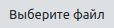
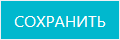
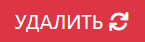

Карточка образца контроля
В карточке образца контроля содержится полная рабочая информация о данной единице образца.
Как перейти в карточку образца
- Перейдите в журнал образцов контроля
-
В блоке основных действий нажмите на иконку добавления нового образца

Функции карточки образца
- Учет всей рабочей информации по данной единице образца
- Хранение скан-копий документации, относящейся к образцу
- Управление статусами образца (состояние при покупке , срок годности не ограничен)
- Управление закреплением образца за ответственными сотрудниками
Структура карточки образца
Карточка образца состоит из следующих блоков:
- Иконки действий
- Блок «Образец контроля»
- Блок «Метрологические характеристики»
Иконки действий
- нажмите на данную иконку чтобы вернуться в журнал образцов контроля.
 - нажмите на данную иконку чтобы добавить новый образец контроля.
- нажмите на данную иконку чтобы добавить новый образец контроля.
Блок «Образец контроля»
В данном блоке содержится основная рабочая информация о данной единице образца, а также скан-копии документации к ней и ее фотографии.
Блок содержит следующие поля:
- Наименование (обязательное поле) – введите сюда наименование образца
- Тип (обязательное поле) - идентификатор типа и модификации образца, указанный в документации к нему.
- Номер (обязательное поле)
- Категория
- Номер в Госреестре - номер образца в государственном реестре.
- Изготовитель (обязательное поле)
- Назначение (обязательное поле)
- Описание типа СО
- Фотография СО
-
Скан-копия документа о праве собственности на СО – загрузите* сюда скан документа о праве собственности.
* Для загрузки файла в левой части строки нажмите кнопку , в результате чего откроется окно выбора файла на локальном компьютере. После загрузки в белой части строки отобразтися имя загружаемого файла, а после сохранения результатов ввода, когда файл попадет в ЛИМС, его название будет отображено в правой, серой, части поля.
– нажмите на данную иконку чтобы скачать файл. Иконка находится в правой части поля. Она становится активной после загрузки файла.
– нажмите на данную иконку чтобы удалить загруженный файл. Иконка находится в правой части поля. Она становится активной после загрузки файла.
- Состояние при покупке - установите курсор в данное поле и в выпадающем списке выберите состояние образца при покупке (новое или б/у).
- Паспорт / руководство по эксплуатации
- Дополнительные сведения
- Нормативный документ, порядок и условия применения
- Документ о праве собственности
- Срок годности
- Дата выпуска
- Годен до
- Срок годности не ограничен - установите данный флажок, если у образеца контроля срок годности не ограничен.
- Примечание - внесите сюда что-нибудь, если вам еще есть что сказать.
- Лаборатория
- Ответственный - установите курсор в данное поле и в выпадающем списке выберите ФИО сотрудника, ответственного за данный образец.
Сохранение блока «Образец контроля»
После того как вы заполнте все поля, нажмите кнопку 
Результат: введенная информация сохранена; карточка образца создана и зарегистрирована в ЛИМС; в Журнале образцы контроля появилась соответствующая запись.
Блок «Метрологические характеристики»
В данном блоке содержится основная рабочая информация о компонентах образца.
Таблица метрологических характеристик
Таблица содержит следующие столбцы:
- Наименование - наименование компонента
- Аттестованное значение - аттестованное значение компонента
Добавить метрологические характеристики
Для того чтобы добавить метрологические характеристики, нажмите кнопку , которая находится в верху таблицы метрологические характеристики. После откроется окно с полями для внесения изменений.
Редактировать метрологические характеристики
Для того чтобы обновить любые внесенные вами изменения, нажмите кнопку , которая находится в строке метрологической характеристики. После откроется окно с полями для обновления изменений.
Удалить метрологические характеристики
Для того чтобы удалить любые внесенные вами изменения, нажмите кнопку , которая находится в окне с полями для обновления изменений. После откроется окно с полями для обновления/удаления изменений.